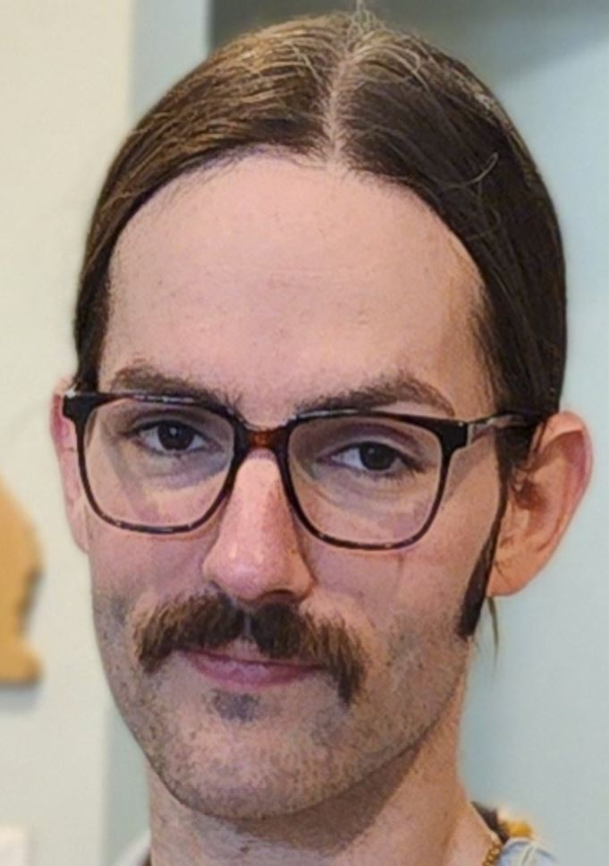

Marcus Lance | WDD 130
Hi there! My name is Marcus Lance from Boise, Idaho. I am a father of 3 and married to my beautiful wife, Jenny. I have a four year old, 2 year old twins, and another set of twins on the way. My kids are named: Bella Danger Lance, Hope Legacy Lance, and Saylor Legend Lance. On the way are: Levi Quest Lance and Maverick Conquer Lance. I am going to have 5 kids under 5. Pretty crazy to think about! I met my wife doing musical theatre, so I have always been a creative type, but I've always been involved with tech and sports too. I have a wide range of intrests. I moved out of California when seemingly everyone did in 2020 and ended up here in Idaho. My family absolutely loves it. We wish we had come out earlier. I worked in fitness for a long time managing health clubs and loved helping people on their health and fitness paths. I lost 100lbs myself, so it was very fufilling to help others. I have always been a people person and have been performing as long as I can remember. I have done a few tours across the country for original bands that I sang for and I still write for other people that hire me. Right now I front a premire cover band that plays in the tri-state area for festivals and large scale events. Come see me on stage!